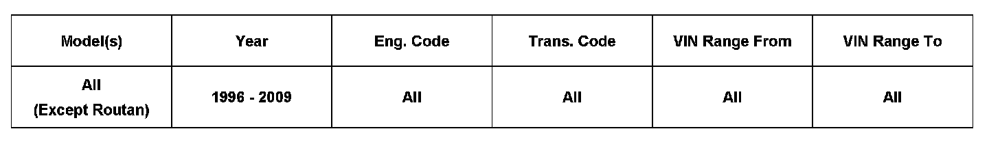
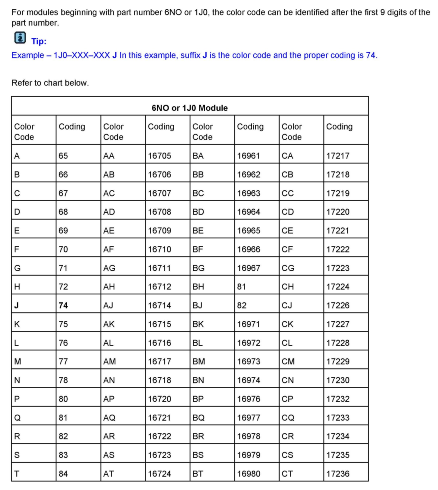
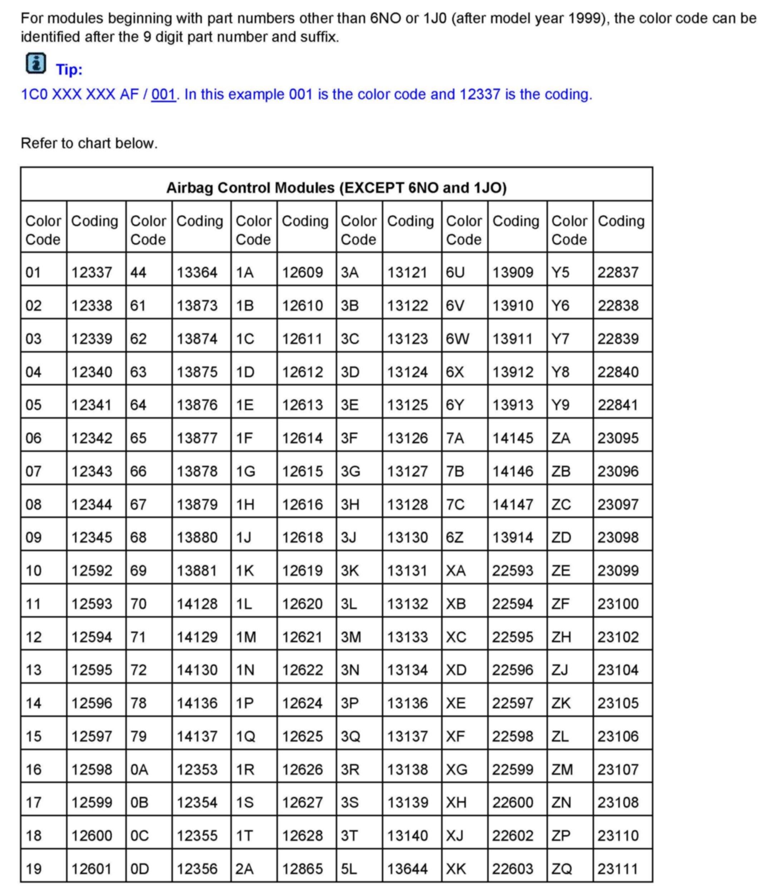
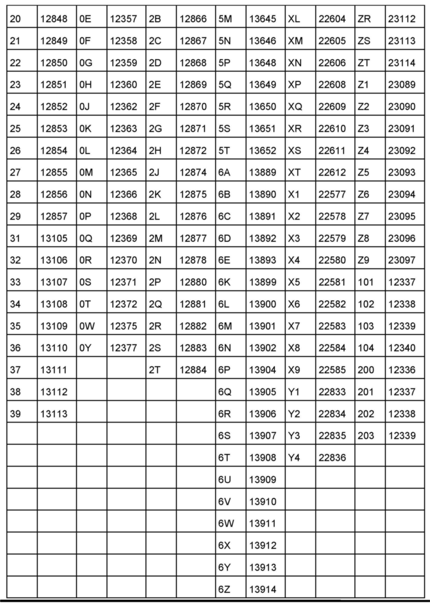
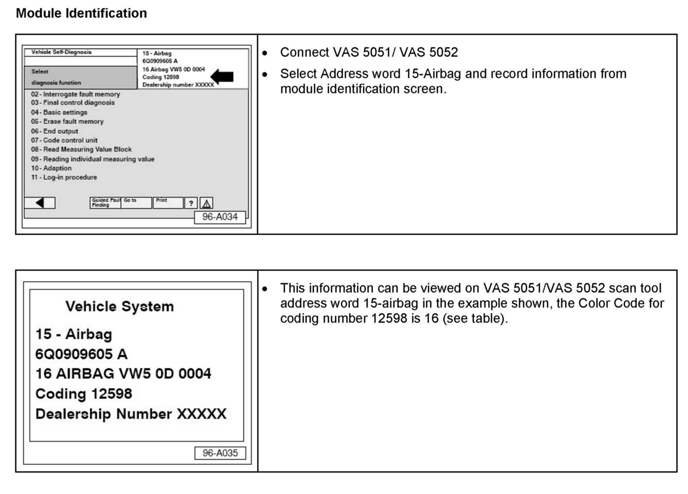
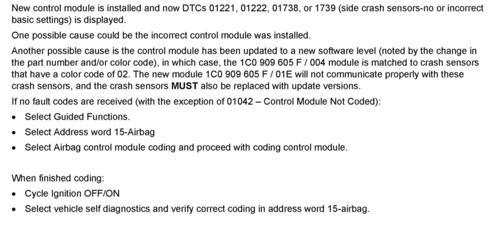

Restraints - Air Bag Color Code ID And Coding
69 08 04Aug. 18, 2008
2011170, Supersedes Technical Bulletin Group 69 number 08-01 dated Jan. 7, 2008 due to additional model years and color codes.

Vehicle Information
Condition
Module, Airbag, Color Code Identification and Coding
Prior to replacing Airbag System components, it is important to properly identify the airbag module color code.
Technical Background
Not applicable.
Production Solution
Not applicable.







Service
Warranty
Information only.
Required Parts and Tools
No Special Parts required.
No Special Tools required.
Additional Information
All part and service references provided in this Technical Bulletin are subject to change and/or removal.
Always check with your Parts Dept. and Repair Manuals for the latest information.